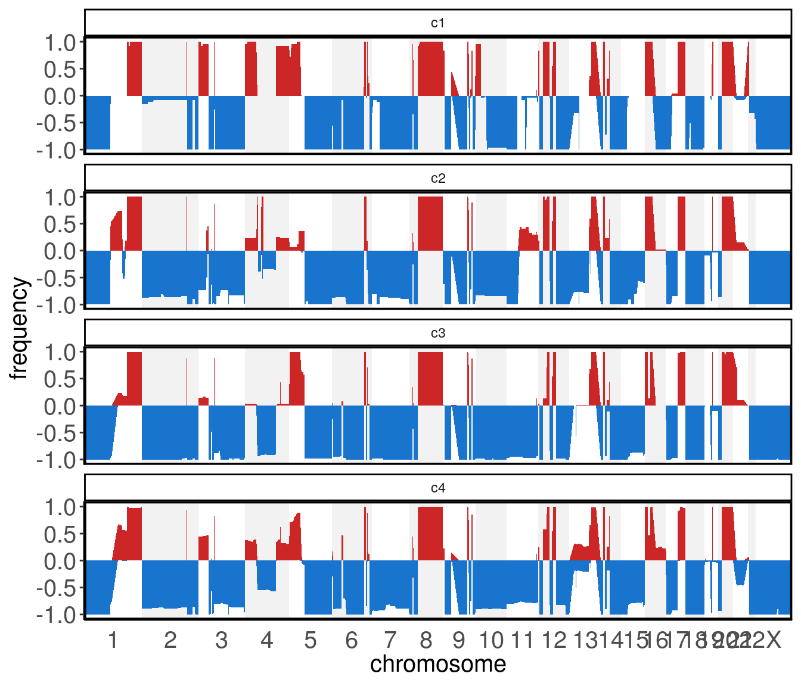
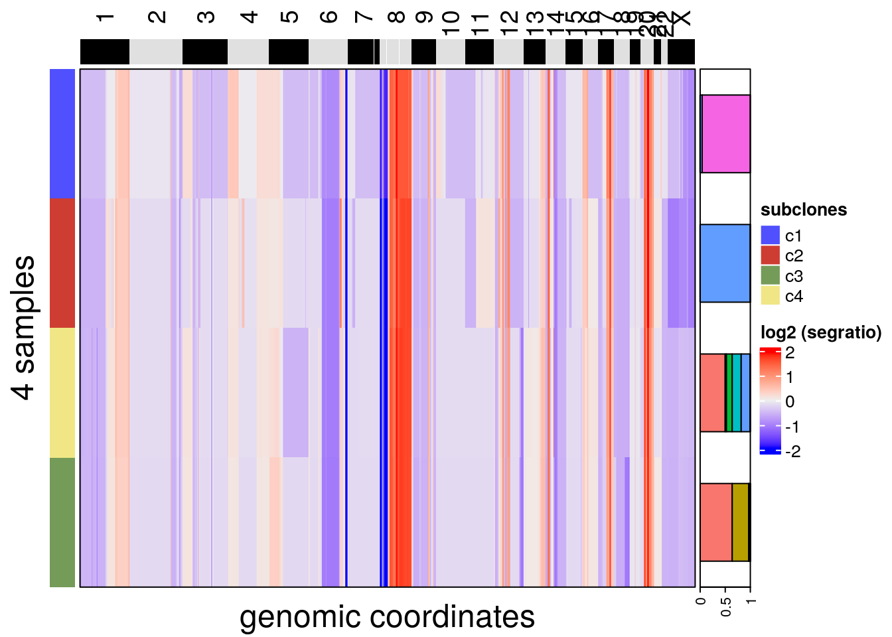
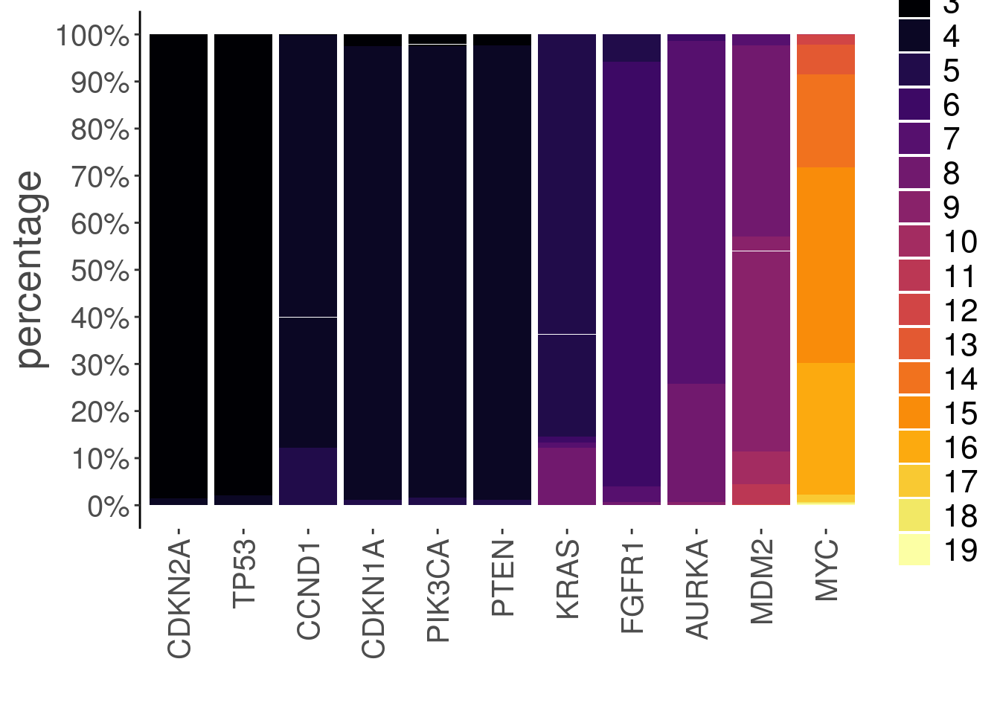

6 Analysis and Visualization module
The analysis and visualization module from CopyKit work in synergy to help you analyze and assess the results.
6.1 plotMetrics()
plotMetrics() can plot any information available within colData().
names(colData(tumor))## [1] "sample" "reads_assigned_bins" "reads_unmapped" "reads_duplicates"
## [5] "reads_multimapped" "reads_unassigned" "reads_ambiguous" "reads_total"
## [9] "percentage_duplicates" "overdispersion" "breakpoint_count" "is_aneuploid"
## [13] "find_normal_cv" "cell_corr_value" "outlier"colData information is provided to the argument metric.
The argument label, if supplied, will color the points based on that information.
plotMetrics(tumor, metric = c("overdispersion",
"breakpoint_count",
"reads_total",
"reads_duplicates",
"reads_assigned_bins",
"percentage_duplicates"),
label = "percentage_duplicates")## Coloring by: percentage_duplicates
6.2 plotRatio()
It is important to visualize that the segmentation behaved as expected and closely follows the ratios.
This helps to verify that the segmentation is correct and visually assess the data quality.
Ratio plots are a great tool for this. plotRatio() has two different modes.
When the input is the CopyKit object, an interactive app will open, allowing selection of which cell will be visualized.
plotRatio(tumor)
If a sample name is provided to plotRatio(), only the plot for the selected cell will be shown.
plotRatio(tumor, "PMTC6LiverC117AL4L5S1_S885_L003_R1_001")
6.3 runUmap()
runUmap() generates a UMAP embedding.
The resulting embedding is stored in the reducedDim slot.
runUmap() is an important pre-processing step to the findClusters() feature.
tumor <- runUmap(tumor)## Using assay: logr## Embedding data with UMAP. Using seed 17## Access reduced dimensions slot with: SingleCellExperiment::reducedDim(scCNA, 'umap').## Done.Additional arguments to control umap parameters can be passed on torunUmap() with the ‘…’ argument.
The full list of additional arguments that can be passed on to uwot::umap with the ‘…’ argument can be seen in the uwot manual and a guide to their influence on clustering can be found in the umap webpage
6.4 plotUmap()
plotUmap() can be used to visualize the reduced dimensional embedding.
plotUmap can be colored by any element of the colData with the argument ‘label.’
plotUmap(tumor)## Plotting Umap.
An example on how to color the points by elements of colData is later shown in this guide.
6.5 Clustering
findClusters() uses the reduced dimensional embedding resulting from runUmap() to perform clustering at two levels (superclones and subclones).
When clustering for superclones findClusters() creates a graph representation of the reduced dimension embedding using a shared nearest neighbor algorithm (SNN).
From this graph the connected components are extracted and, generally, represent high-level structures that share large copy number events.
At a more fine-grained resolution, CopyKit can also be used to detect subclones. To do so, the umap embedding is used as the pre-processing step.
Different clustering algorithms can be used to detect subclones:
The hdbscan method is recommended and has beenp reviously successfully applied in the work from Laks et al. and Minussi et al..
6.5.1 findSugestedK()
To help with parametrization, CopyKit provides the helper function findSuggestedK(). The function
findSuggestedK bootstraps clustering over a range of k values, and returns the value that maximizes the jaccard similarity. By default, the metric being maximized is median (argument metric).
While findSuggestedK does not guarantee optimal clustering, it does provides a guide that maximizes cluster stability.
tumor <- findSuggestedK(tumor)## Calculating jaccard similarity for k range: 10 11 12 13 14 15 16 17 18 19 20 21 22 23 24 25 26 27 28## ## Suggested k = 10 with median jaccard similarity of: 1We can inspect the results of findSuggestedK() with plotSuggestedK().
The default geom plots a boxplot of each k assessed during the grid search. The red point inside each boxplot represents the mean jaccard similarity for a given k.
plotSuggestedK(tumor)
If the argument geom is set to tile, plotSuggestedK() plots a heatmap where each row is a detected subclone, each column is a k assessed during the grid search and the color represents the jaccard similarity for a given clone.
Clones not detected in a given k are presented in gray.
plotSuggestedK(tumor, geom = 'tile')
It is also possible to visualize the relation between subclone sizes with the jaccard similarity setting geom to scatterplot
plotSuggestedK(tumor, geom = 'scatterplot')## `geom_smooth()` using formula 'y ~ x'
The suggested value is stored into the metadata and can be accessed at:
S4Vectors::metadata(tumor)$suggestedK## [1] 106.5.2 findClusters()
To run findClusters() we can provide the CopyKit object to the function.
tumor <- findClusters(tumor)## Using suggested k_subclones = 10## Finding clusters, using method: hdbscan## Found 4 subclones.## Done.If findSuggestedK() was run prior, and the argument ‘k_subclones’ is not provided, findClusters() will automatically use the value resulting from findSuggestedK() that was stored into the metadata:
k values can be manually controlled with ‘k_superclones’ and ‘k_subclones.’ NOTE: k_superclones and k_subclones can be used concurrently. Only k_subclones is a mandatory field.
For example (not run):
tumor <- findClusters(tumor,
k_superclones = 30,
k_subclones = 15)If the method used for clustering was hdbscan, it is possible that a subgroup of outliers is identified. Outliers are added to subgroup c0 and may be removed by subsetting the CopyKit object.
Copykit will report if any cell was classified as c0 in an informative message after running findClusters()
tumor <- tumor[,colData(tumor)$subclones != 'c0']We can use different plotting functions to visualize clustering results. For example plotUmap() can be used with the argument ‘label’:
plotUmap(tumor, label = 'subclones')## Plotting Umap.## Coloring by: subclones.
6.6 runPhylo()
To run a phylogenetic analysis of cells’ copy number profiles, use the function runPhylo().
Available methods are Neighbor Joining and Balanced Minimum evolution.
The resulting tree is stored within the CopyKit object in the phylo slot:
tumor <- runPhylo(tumor, metric = 'manhattan')## Using ratio data...## Calculating distance matrix## Creating neighbor-joining tree.## Access slot with copykit::phylo(scCNA).## Done.6.7 plotPhylo()
To visualize the resulting phylogenetic trees from runPhylo() we can use the plotPhylo() function.
plotPhylo(tumor)
plotPhylo() can use any element of the colData to color the leaves of the tree.
plotPhylo(tumor, label = 'subclones')
6.8 calcInteger()
The true underlying copy number states for a given region of the genome are given in integer states. We can use the segment ratio means to make an inference of the copy number state for a given genomic region. Keep in mind that those are inferences and, as such, are subjected to errors of different sources, like erroneous inference or rounding errors.
Segment ratio means can be scaled to integer values with calcInteger().
CopyKit supports different methods of calculating integer copy number profiles.
To calculate computational ploidies, CopyKit adopts the scquantum package. To use scquantum just set the argument method to scquantum.
tumor <- calcInteger(tumor, method = 'scquantum')By setting the argument method to fixed, a fixed value of ploidy (generally determined using Flow Cytometry) will scale all cells.
tumor <- calcInteger(tumor, ploidy_value = 4.3)## Scaling ratio values by ploidy value 4.3Alternatively, if different ploidies are needed for different cells, a vector containing the ploidies can be passed on to calcInteger(), as long as it has an equal length and sample order as colData().
The integer values are stored in the slot integer that can be accessed with the function assay().
If the assay integer exists, plotRatio() will use it to plot the integer copy number values as a secondary axis.
plotRatio(tumor, "PMTC6LiverC117AL4L5S1_S885_L003_R1_001")
6.9 plotHeatmap()
To visualize copy number profiles with a heatmap we can use plotHeatmap().
The heatmap can be annotated with elements of colData.
To order subclones, one option is to calculate a consensus phylogeny, explained in later sections:
tumor <- calcConsensus(tumor)
tumor <- runConsensusPhylo(tumor)To plot the heatmap.
plotHeatmap(tumor, label = 'subclones')## Plotting Heatmap.
Genes can be annotated to a heatmap in plotHeatmap() with the genes argument.
The genes argument is a vector of gene HUGO symbols:
plotHeatmap(tumor, label = 'subclones', genes = c("TP53", "BRAF", "MYC"))To plot integer copy number heatmaps pass the argument assay = 'integer', importantly the integer matrix must be in the 'integer'slot.
plotHeatmap(tumor, assay = 'integer')## Plotting Heatmap.
New information can be added to colData() and used in conjunction with the plotting functions.
The example dataset has macro-spatial information. The information is encoded in the sample name by the letter L followed by a number.
We can extract that information and add it as an extra column to the metadata:
colData(tumor)$spatial_info <- stringr::str_extract(colData(tumor)$sample, "L[0-9]")Once the information has been added, we can use it to color the umap by their spatial information:
plotUmap(tumor, label = 'spatial_info')## Plotting Umap.## Coloring by: spatial_info.
It is also possible to annotate the heatmap with that information:
The ‘label’ argument for plotHeatmap() can add as many annotations as specified by the user as long as they are elements in colData() of the CopyKit object.
plotHeatmap(tumor, label = c("spatial_info", "subclones"))## Plotting Heatmap.
6.10 plotFreq()
Computing the frequencies of genomic gain or losses across the genome can be useful to visualize differences between groups. This can be done with plotFreq().
For every region of the genome, plotFreq() will calculate the frequency of gain or losses according to a threshold across all samples.
The thresholds are controlled with the arguments low_threshold (values below will be counted as genomic losses) and high_threshold (values above will be counted as genomic gains).
Ideally thresholds will be set according to the ploidy of the sample. For example, the sample presented throughout this documentation has a ploidy of approximately 4.3, therefore a gain or loss of one copy number for this sample should have a difference in the segment ratio value of 1/4.3 (~0.23). This way, we will set the thresholds accordingly to a difference of plus or minus 0.2 (leaving some room for error), compared to a segment ratio of 1.
The argument assay can be provided to pass on the integer assay instead of the segment_ratios assay (adjust thresholds accordingly).
Two geoms are available area or line.
plotFreq(tumor, low_threshold = 0.8, high_threshold = 1.2)
Group information can be set to any categorical element of the colData() and is provided with the argument label.
plotFreq(tumor,
low_threshold = 0.8,
high_threshold = 1.2,
label = 'subclones')
6.11 calcConsensus()
Consensus sequences can help visualize the different segments across subclones. To calculate consensus matrices we can use calcConsensus().
tumor <- calcConsensus(tumor)plotHeatmap() can plot a consensus heatmap:
plotHeatmap(tumor, consensus = TRUE, label = 'subclones')## Plotting Heatmap.
plotHeatmap() can annotate the consensus heatmap with information from the metadata as long as label is the same as the information used to build the consensus matrix:
plotHeatmap(tumor, consensus = TRUE, label = 'subclones', group = 'spatial_info')## Plotting Heatmap.
By default calcConsensus() uses the subclones information to calculate a consensus for each subclone.
Any element of the colData() can be used to calculate the consensus.
Note: Consensus matrices can be calculated from the integer assay. Importantly, the integer matrix must be in the assay(tumor, 'integer') slot. Check calcInteger() for more info.
tumor <- calcConsensus(tumor, consensus_by = 'subclones', assay = 'integer')6.12 plotConsensusLine()
To compare the differences among subclones, plotConsensusLine() opens an interactive app where the consensus sequences are plotted as lines.
plotConsensusLine(tumor)
6.13 plotGeneCopy()
To check copy number states across of genes we can use plotGeneCopy(). Two different geoms: “swarm” (default) or “violin” can be applied.
As with other plotting functions, points can be colored with the argument ‘label.’
plotGeneCopy(tumor, genes = c("CDKN2A",
"FGFR1",
"TP53",
"PTEN",
"MYC",
"CDKN1A",
"MDM2",
"AURKA",
"PIK3CA",
"CCND1",
"KRAS"),
label = 'spatial_info')## Coloring by: spatial_info
A barplot geom is also provided to visualize the integer data as a frequency barplot for each gene:
plotGeneCopy(tumor, genes = c("CDKN2A",
"FGFR1",
"TP53",
"PTEN",
"MYC",
"CDKN1A",
"MDM2",
"AURKA",
"PIK3CA",
"CCND1",
"KRAS"),
geom = 'barplot',
assay = 'integer')
6.14 plotAlluvial()
To visualize frequencies across elements of the metadata we can use plotAlluvial()
plotAlluvial(tumor, label = c("subclones", "spatial_info"))